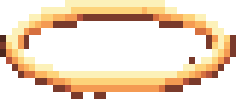
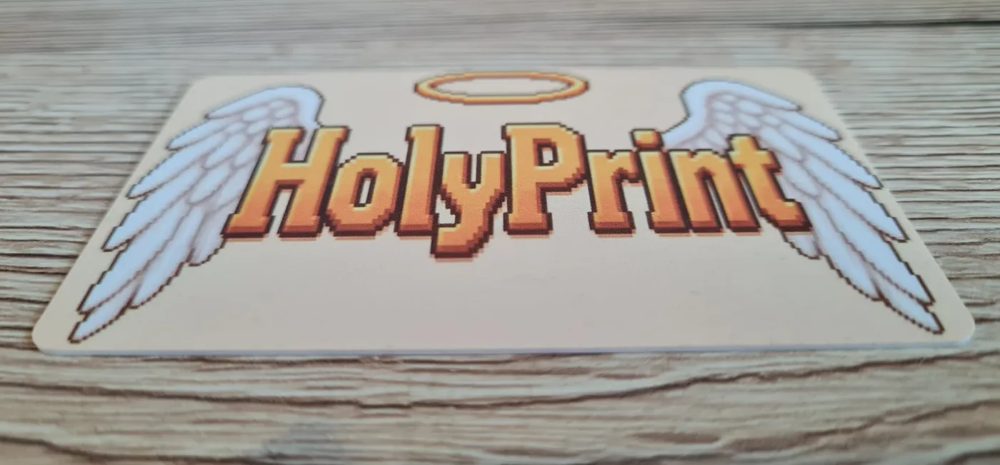
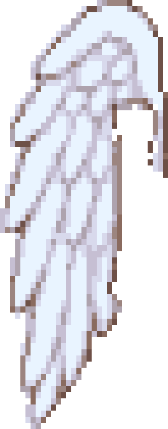
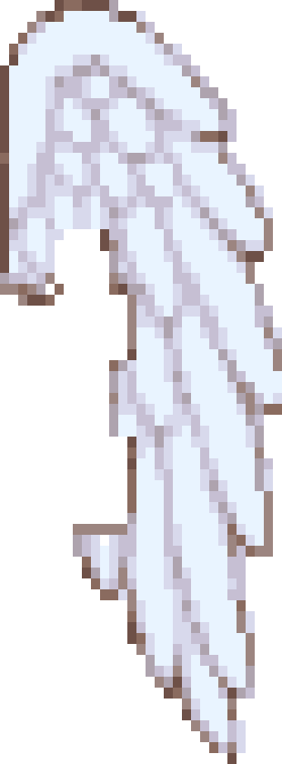

Tradycja w pixelowej odsłonie
Holy Print to mała pracownia, w której wizerunki świętych patronów spotykają się z estetyką retro gier.
Skąd ten pomysł?
Święci, których chce się mieć przy sobie
Holy Print łączy dwie rzeczy: wizerunki świętych, którzy od wieków towarzyszą nam w codzienności, i pixel art – styl kojarzący się z ciepłem, prostotą i dziecięcą radością.
Każdy wzór dopracowujemy tak, by był czytelny i pełen znaczeń. Michał Archanioł trzyma tarczę z napisem „Quis ut Deus?”, Teresa – bukiet róż, Klara – monstrancję, a Franciszka otaczają zwierzęta. Dzięki temu obrazek jest nie tylko ładny, ale też opowiada historię patrona.
Wierzymy, że mały przedmiot może być dobrym początkiem rozmowy – z dzieckiem przed Pierwszą Komunią, z przyjacielem przed bierzmowaniem albo z babcią na imieninach.

Co jest dla nas ważne
Trzy zasady Holy Print
Szacunek dla tradycji
Pixel art to dla nas forma, nie żart. Dbamy o atrybuty i symbolikę każdego świętego.
Staranność
Każdy egzemplarz oglądamy przed wysyłką i pakujemy tak, by dotarł w idealnym stanie.
Dla każdego pokolenia
Dzieci kochają ten styl za „growy” klimat, dorośli – za detale i ciepłe kolory.
Z naszej pracowni
Jak powstają nasze obrazki
- 1
Projekt
Każdego świętego przedstawiamy w pixelowym stylu, dbając o jego atrybuty.
- 2
Druk
Wzory drukujemy na drukarce żywicznej – kolory są nasycone, a detale wyraźne.
- 3
Kontrola
Sprawdzamy każdy egzemplarz – do Ciebie trafia tylko to, z czego sami jesteśmy zadowoleni.
- 4
Wysyłka
Pakujemy starannie i wysyłamy do Paczkomatu lub pod Twoje drzwi.


Pięciu patronów czeka
Znajdź swojego świętego
Michał Archanioł, Ojciec Pio, Teresa z Lisieux, Franciszek i Klara z Asyżu – na obrazkach i brelokach.
Przejdź do sklepu